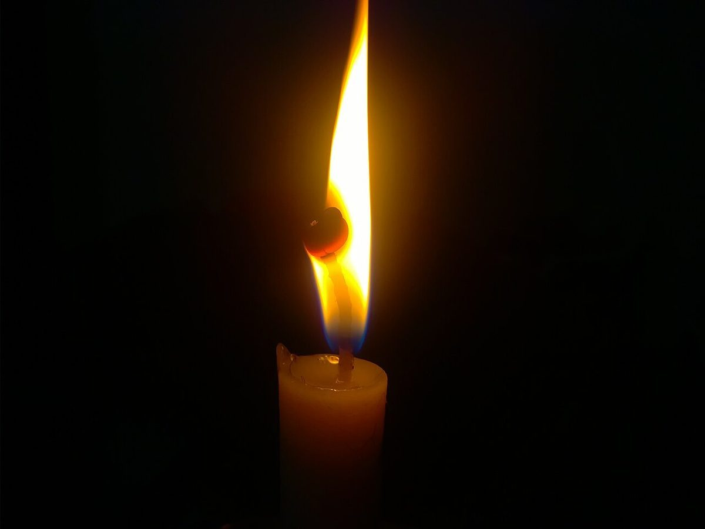

カフェ / 長野県長野市
VOLTACAFE
長野県長野市にあるカフェ「CAFE VOLTA」のご案内ページです。営業時間やメニューなど、詳しいことは準備中。まずはInstagramをのぞいてみてください。

写真(イメージ)
コーヒーまわりの写真



制作側の連想
ネイル用UVライトの部位の配置図
このサイトの構成は、制作側が思いついた連想で、お店の理念・由来とは無関係です。屋号の由来は分かりません。ひとつの道具を部位に分けて見せる「配置図」の形を借り、5つのページを部位に見立てて並べました。図は一般的な形の一例で、実際の製品の仕様を示すものではありません。
写真(イメージ)
パンの写真(撮影地不明)


ご案内
お店のこと(確認できたものだけ)
| 所在地 | 〒380-0905 長野県長野市鶴賀七瀬南部383-1 |
|---|---|
| 電話 | 準備中 |
| 営業時間 | 準備中 |
| 定休日 | 準備中 |
| ご予約 | 準備中 |
| 駐車場 | 準備中 |
| SNS | Instagram @nagano.cafevolta |